In this talk we consider a new inner-outer iterative algorithm for edge recovery in image restoration and reconstruction problems. Specifically, we consider generating regularized solutions
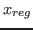
to
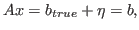
with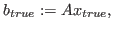
where
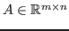
is a known forward operator,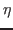
is unknown, and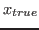
is the unknown, vectorized version of the true image to which we would like to generate an approximation.One of the most well-known methods of regularization is Tikhonov regularization
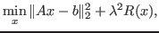
where
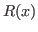
is referred to as the regularization term in the cost functional. The regularization parameter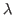
determines the trade-off between the fidelity to the model, and damping of the noise through enforcement of apriori information via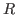
. Often,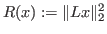
where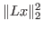
, solutions tend to be smooth, assuming an appropriate value of is known. On the other hand, solving this regularized least squares problem with a suitable Krylov method is straightforward if is known, asTwo well-known alternative choices for when one desires regularized solutions with sharp edges are
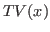
(total variation) and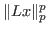
withWe propose a novel, two-step approach, in which we solve a sequence of regularized least squares problems
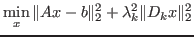
where the near-optimal value of
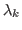
is determined on-the-fly for each regularization operator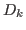
through a hybrid regularization approach used in (Kilmer, Hansen, Espanol; SISC, 2007). We give a method for designing adaptively in the outer iteration in such a way that edges are enhanced as